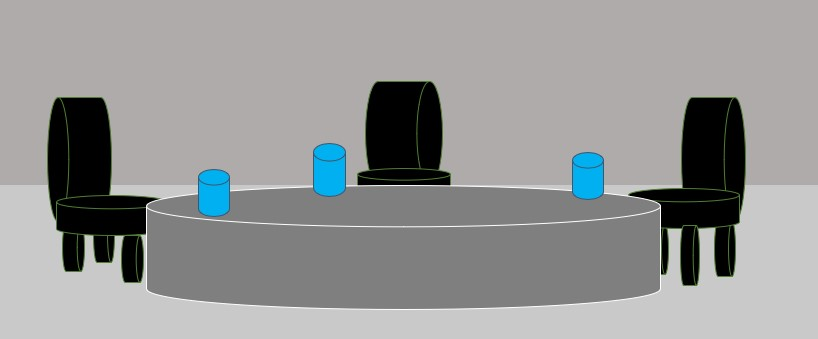

We had gone to moon in April 14 1970. It's the farthest
place were human ever been from the Earth.
We also send rover to Mars. Rover is a motor vehicle that travels across
the whole Mars. It’s launched by NASA.

NASA is American space agency.
Scientists also launched a probe on April 2020. It is made in China. It’s already reached Saturn.
Voyager 1 Is a space probe. It is send by NASA in September
5 1977. It is 36 years in space. And it is 12 billion miles from Earth. It is already
gone out of our Solar System.

Same with Voyager 2, it also a space probe. It is
sent by NASA in 20 August 1977. Finally, it is also already gone out
of our Solar System.

Humans are researching on Mars surface to discover water. If the mission
is successful, Mars would be our second home. And we will be
called “MARTIANS”. Bye bye!!